통신선로기능사 (2002-01-27 기출문제)
1과목: 전기전자개론
1. 기전력 E[V],내부저항 r[Ω]되는 같은 전지 n[개]를 직렬로 접속하고 외부저항 R[Ω]을 직렬로 접속하였을때 흐르는 전류는?
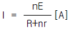
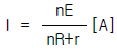
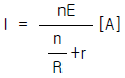
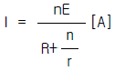
(정답률: 30%)

2. 저항이 무시된 coil에 흐르는 교류전류의 위상은 공급 전압의 위상 보다 어떠한가?
- 90° 빠르다.
- 90° 늦다.
- 시간에 따라 다르다.
- 같다.
(정답률: 28%)
3. 정현파 교류의 최대치와 실효치와의 관계는?
- 최대치 = 1/√2 × 실효치
- 최대치 = √2 × 실효치
- 최대치 = 2 × 실효치
- 최대치 =
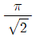
× 실효치
(정답률: 47%)
4. 그림과 같은 콘덴서의 직렬접속에서 V1에 걸리는 전압은?
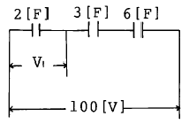
- 50 [V]
- 100/3 [V]
- 50/3 [V]
- 25[V]
(정답률: 53%)
5. 어떤 자로에 NI[AT]의 기자력을 가했을 때 ø[Wb]의 자속이 이동했다면 그 자로의 자기 저항[AT/Wb]은?
- Nø/I
- Iø/N
- NI/ø
- 1/NIø
(정답률: 50%)
6. 코일 N회를 감은 원형 코일에 I[A]의 전류를 흘릴 경우 반지름 r[m]인 코일 중심에 작용하는 자장의 세기는?
- NIr
- NI/2r
- NI/r
- 2NI/r
(정답률: 67%)
7. PN 접합 다이오드의 접합부 정전 용량은 역방향 바이어스 전압과 어떤 관계가 있는가?
- 비례한다.
- 반비례한다.
- 제곱근에 비례한다.
- 제곱근에 반비례한다.
(정답률: 알수없음)
8. 아래 그림은 가산기(adder)회로이다. 출력 Vo는 얼마인가?
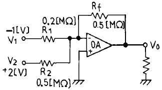
- 0.5[V]
- 1[V]
- 1.5[V]
- 4.5[V]
(정답률: 48%)
9. LC 발진회로에 속하지 않는 것은?
- 콜피츠 발진회로
- 하아틀리 발진회로
- 양극동조 발진회로
- 윈브리지 발진회로
(정답률: 50%)
10. LC 발진회로에서 L = 200[μH], C = 200[㎊]이면 발진 주파수는 약 얼마인가?
- 70[㎑]
- 80[㎑]
- 700[㎑]
- 800[㎑]
(정답률: 55%)
11. 반송파의 진폭을 신호파에 따라 변화시키는 것은?
- 펄스 변조
- 위상 변조
- 평형 변조
- 진폭 변조
(정답률: 60%)
12. AM 변조기에서 발생하는 측대파의 수는?
- 1개
- 2개
- 3개
- 무수히 많다.
(정답률: 41%)
13. 2진수 1101에 대한 2의 보수는 얼마인가?
- 0010
- 0011
- 1101
- 1100
(정답률: 47%)
14. A급 전력 증폭회로에서 효율 η 는 얼마인가?
- 99.9[%]
- 88.8[%]
- 77.7[%]
- 50[%]
(정답률: 17%)
15. 다음중 R=10[Ω]인 저항을 병렬로 10개 연결하면 합성저항의 크기는 몇[Ω]인가?
- 1[Ω]
- 2[Ω]
- 3[Ω]
- 4[Ω]
(정답률: 65%)
2과목: 전자계산기일반
16. 다음 중 동작원리면에서 상사형 계산기(Analog computer)에 가장 가까운 것은?
- 탁상계산기(calculator)
- 주판
- 현금등록기(cash register)
- 계산자
(정답률: 53%)
17. 전자계산기의 기본 구성에 해당되지 않는 것은?
- 입력 장치
- 중앙 연산 처리 장치(CPU)
- 출력 장치
- 변복조 장치
(정답률: 70%)
18. 다음 기억소자중 가장 빠른 호출 시간을 갖는 것은?
- 보조 메모리
- 버퍼 메모리
- 가상 메모리
- 캐쉬 메모리
(정답률: 80%)
19. 다음 중 입력장치가 아닌 것은?
- 자기잉크 판독기(MICR)
- 인행장치(line printer)
- 광학마아크 판독기(OMR)
- 카드 판독기(card reader)
(정답률: 71%)
20. 보기의 회로를 대수식으로 바르게 표시한 것은?
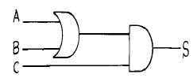
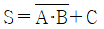
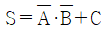
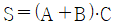
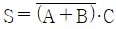
(정답률: 58%)
21. FORTRAN이란?
- 최초로 이용된 것은 1957년 UNIVAC 기종이였다.
- 수학의 수식과 비슷하게 되어 있고 주로 과학 계산에 쓰이는 컴퓨터 언어이다.
- 기계어의 일종이다.
- 프로그램이 복합문 또는 블록(block)의 집합으로 구성된다.
(정답률: 56%)
22. 제어 프로그램에 포함되지 않는 것은?
- 감시 프로그램
- 데이터관리 프로그램
- JOB관리 프로그램
- 언어번역 프로그램
(정답률: 65%)
23. 드모르간(De-Morgan)의 정리에 의한 기본 공식중 맞는 것은?
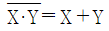
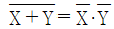
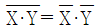
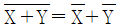
(정답률: 74%)
24. 전자계산기에서 10진수의 일반적인 부호 표시는?
- 3초과 부호(Excess-3 Code)
- 2진화 10진부호(BCD)
- 해밍부호(Hamming Code)
- 그레이부호(Gray Code)
(정답률: 77%)
25. 컴퓨터 시스템의 효율적 운용을 위한 소프트웨어 집단을 무엇이라 하는가?
- 운영체제(operating system)
- 컴파일러(compiler)
- 기계어(machine language)
- 번역장치(interpreter)
(정답률: 알수없음)
26. 선로에 있어서 전송되는 전파속도 ν는 얼마인가? (단, L : 선로의 유도성 인덕턴스, C : 선로의 용량성 캐퍼시턴스 )
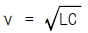
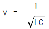
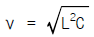
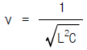
(정답률: 60%)
27. 전주를 건식할때 전주구덩이의 지름 D는 전주 하단지름 Do보다 얼마 정도 더 커야 되는가?
- D = Do + 5[㎝]
- D = Do + 10[㎝]
- D = Do + 17[㎝]
- D = Do + 23[㎝]
(정답률: 46%)
28. 전화 케이블의 심선절연에 대한 누설량을 경감시키기 위한 조건에 해당되지 않는 것은?
- 도체 간격을 넓힐 것
- 절연저항을 높일 것
- 와류손을 크게 할것
- 절연물을 건조시킬것
(정답률: 50%)
29. 근단누화의 설명으로 가장 적합한 것은?
- 직접결합에 의한 누화이다.
- 유도회선의 수단측에 나타나는 피유도회선의 누화이다.
- 유도회선의 송단측에 나타나는 피유도회선의 누화이다.
- 제3회선을 경유하여 나타나는 누화이다.
(정답률: 62%)
30. 등화회로에 관한 설명중 옳지 않은 것은?
- 선로에 전송지연에 의한 일그러짐을 보상한다.
- 전송신호의 진폭감쇄에 의한 일그러짐을 보상한다.
- 수동방식과 자동방식이 있다.
- 전송잡음에 의하여 발생한 에러를 보상한다.
(정답률: 54%)
3과목: 통신선로일반
31. 통신 케이블 외피의 필요조건이 아닌 것은?
- 케이블내에 수분이 침입되지 않을 것
- 가요성이 좋고 기계적인 강도를 가질 것
- 전기적인 유도방해 및 전식등을 받지 않을 것
- 가격이 저렴하고 중량이 무거울 것
(정답률: 100%)
32. SH형 PVC 국내 케이블의 칼라 코오드(Color code) 순서 중 맞는 것은?
- 청,록,갈,황,흑
- 청,황,록,흑,백
- 청,황,록,갈,흑
- 청,갈,록,황,흑
(정답률: 44%)
33. 절연 저항계(Megger)의 L단자와 E단자를 단락하고 핸들을 돌리면 지침의 위치는?
- 중간에 선다.
- ∞를 지시한다.
- 0을 지시한다.
- 움직이지 않는다.
(정답률: 28%)
34. 맨홀 및 핸드홀 내부에서 케이블의 곡율반경은 케이블 외경의 몇 배 이상이 되어야 하는가?
- 2배
- 3배
- 6배
- 9배
(정답률: 59%)
35. 24CH, 8bit용 디지탈 전송로 집선장치에서 전송로에 송출되는 전송속도는 얼마인가?
- 1.544[Mb/s]
- 3.152[Mb/s]
- 128[Kb/s]
- 256[Kb/s]
(정답률: 60%)
36. 동축케이블의 전송손실은 사용주파수와 어떤 관계인가?
- 사용주파수에 관계없이 일정하다.
- 사용주파수에 비례해서 증가한다.
- 사용주파수에 비례해서 감소한다.
- 사용주파수의 평방근에 비례해서 증가한다.
(정답률: 71%)
37. PEF 시외 케이블에 대하여 바르게 설명한 것은?
- 경보용 회선의 절연 재료는 종이이다.
- 경보 회선은 케이블의 가장 가운데 부분에 둔다.
- 반송용 모드의 케이블 심은 각 층이 동일 방향으로 비틀어져 있다.
- 음성용 모드의 심선은 각층마다 동일 방향으로 비틀어져 있다.
(정답률: 50%)
38. 그림과 같이 클래딩은 직경 125[㎛]에 원형 그대로이고 단지 코어만 찌그러져서 최대직경 51[㎛], 최소직경 49[㎛]가 된 광섬유심선 코어의 비원율은 얼마인가? (단, 코어의 표준직경은 50[㎛]이다.)
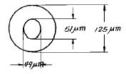
- 4[%]
- 5[%]
- 6[%]
- 7[%]
(정답률: 37%)
39. 단일모드(Single mode) 광섬유 케이블에 관한 설명 중 틀린 것은?
- 모드(Mode) 분산이 있다.
- 색분산이 있다.
- 구조분산이 있다.
- 다중모드에 비하여 대역폭이 넓다.
(정답률: 30%)
40. 다음 통신· 토목시설 중 케이블 접속점을 시설할 수 없는 것은?
- 인공
- 관로
- 수공
- 동도
(정답률: 알수없음)
41. 5000형 건조공기 주입장치란?
- 중량 5000Kg의 장치이다.
- 압력 5000PSI의 장치이다.
- 1일 평균 5000 S.C.F.D의 공기를 생산 공급하는 장치이다.
- 1시간 평균 5000 S.C.F.D의 공기를 건조시키는 장치이다.
(정답률: 27%)
42. 시내전화의 가설에 사용되는 CCP 케이블 선로에 한해서 사용되는 단자함은 어느 것인가?
- 종말 단자함
- 통신 1호 시내 단자함
- 현수형 단자함
- 통신 2호 시외 단자함
(정답률: 34%)
43. 규격인공 적용상 유의사항이 아닌 것은?
- 케이블 분기방향
- 관로의 길이
- 관로의 인입위치
- 관로인입각도
(정답률: 23%)
44. 펄스시험기에 의하여 전화케이블을 측정하였더니 송신펄스와 동상인 반사펄스를 수신했다. 어떤 현상인가?
- 단선고장
- 단락고장
- 절연저항 저하
- 정상상태
(정답률: 35%)
45. 다음은 안전관리에 대한 설명으로 적합하지 못한 것은?
- 전주에 사다리를 세울 때 사다리 밑부분은 전주에서 사다리 길이의 1/10 만큼 띄우는게 좋다.
- 인공은 반드시 가스 점검후에 출입해야 한다.
- 안전 표시판은 충분한 량을 설치한다.
- 공기구는 작업에 알맞는 것을 사용해야 한다.
(정답률: 69%)
4과목: 선로설비기준
46. 교환설비를 가장 바르게 설명한 것은?
- 다수의 전기통신 회선을 제어.접속하여 회선 상호간의 전기통신을 가능하게 하는 교환기와 그 부대설비
- 다수의 전기통신회선을 제어하여 상호간의 전기통신을 가능하게 하는 교환기
- 다수의 전기통신회선을 접속하여 상호간의 전기통신을 가능하게 하는 교환기
- 다수의 전기통신회선을 제어.접속하여 전기통신을 가능하게 하는 교환기와 그 부대설비
(정답률: 28%)
47. 전기통신기본계획에 대한 설명으로 적합하지 않은 것은?
- 기본계획은 대통령이 수립한다.
- 전기통신의 원활한 발전을 위한 내용이어야 한다.
- 계획수립전에 행정기관의 장과 협의하여야 한다.
- 전기통신사업에 관한 사항도 포함되어야 한다.
(정답률: 67%)
48. 다음 설명 중 맞는 것은?
- 전기통신설비는 전기통신역무를 제공받기 위한 설비이다.
- 전기통신회선설비는 전기통신사업을 제공하기 위하여 설치한 설비이다.
- 전기통신설비는 특정인이 일반전기통신 소통을 목적으로 설치한 설비이다.
- 자가통신설비는 특정인이 자신의 전기통신에 이용하기 위하여 설치한 설비이다.
(정답률: 28%)
49. 다음 전기통신의 정의중 ( )안에 가장 적합한 것은?
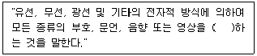
- 전송
- 교신
- 전달
- 송ㆍ수신
(정답률: 60%)
50. 동일한 가입구역 안에 2 이상의 전화교환국이 있는 경우 그 전화국별로 전화를 수용하는 구역을 지정한 지역을 무엇이라고 하는가?
- 준가입구역
- 수용구역
- 분담구역
- 통화구역
(정답률: 62%)
51. 전기통신설비의 기술기준에 관한 규칙에서 규제하는 항목이 아닌 것은?
- 전력유도의 방지
- 구내통신실의 면적확보
- 맨홀의 설치기준
- 전기통신설비의 이용약관
(정답률: 60%)
52. 차도내 PVC 지하관로 매설시 매설기준(토피규격)은?
- 50[cm] 이상
- 70[cm] 이상
- 100[cm] 이상
- 200[cm] 이상
(정답률: 72%)
53. 정보통신공사업에서 정하는 정보통신기술자의 등급은?
- 1급, 2급, 3급
- 기사, 산업기사, 기능사
- 특급, 고급, 중급, 초급
- 일반(기사, 기능), 별종(교육필자)
(정답률: 58%)
54. 다음 중 정보통신공사업에 종사하는 통신기술자의 기술 및 자질 향상을 위한 교육실시기관은?
- 한국전자통신연구원
- 한국전기통신공사
- 한국산업인력공단
- 한국정보통신공사협회
(정답률: 47%)
55. 구내통신선로 설비를 보호하기 위한 보안용 접지에 관한 설명 중 맞는 것은?
- 주배선반의 접지저항은 10[Ω ]이하
- 단자함의 접지저항은 100[Ω ]이하
- 보안기용 접지저항은 300[Ω ]이하
- 접지선을 0.65[mm]이상의 PVC선을 사용한다.
(정답률: 9%)
56. 다음 중 "구내통신선로설비"가 아닌 것은?
- 배관
- 단말장치
- 단자
- 옥내관로
(정답률: 57%)
57. 선로설비의 회선 상호간, 회선과 대지 상호간의 절연저항은 얼마인가?
- DC 250[V]의 절연저항계로 측정하여 10[MΩ ]이상이어야 한다.
- DC 500[V]의 절연저항계로 측정하여 30[MΩ ]이상이어야 한다.
- DC 250[V]의 절연저항계로 측정하여 20[MΩ ]이상이어야 한다.
- DC 500[V]의 절연저항계로 측정하여 10[MΩ ]이상이어야 한다.
(정답률: 15%)
58. 전기통신설비의 기술기준에서 규정한 저주파수란?
- 300[㎐]미만의 주파수
- 1[㎑]미만의 주파수
- 2[㎑]미만의 주파수
- 3[㎑]미만의 주파수
(정답률: 36%)
59. 전화급 음성주파수대역은?
- 100[Hz]∼300[Hz]
- 300[Hz]∼3400[Hz]
- 1000[Hz]∼4300[Hz]
- 4000[Hz]∼10000[Hz]
(정답률: 53%)
60. 자가통신설비는 목적외 사용을 허용하고 있는 경우가 있다. 다음 중 이에 해당하지 않는 것은?
- 경찰에 종사하는 자로 하여금 치안유지를 위하여 사용하게 하는 경우
- 재해구조업무에 종사하는 자로 하여금 긴급한 재해구조를 위하여 사용하게 하는 경우
- 정보통신부 고시로서 자가통신설비의 설치자와 업무상 특수한 관계에 있는 자간에 사용하는 경우
- 자가통신설비자의 친지 및 가족간에 사용하는 경우
(정답률: 72%)
전체 저항 R_total은 내부저항과 외부저항을 합한 값입니다.
R_total = r + R
전류 I는 전압 V_total을 전체 저항 R_total로 나눈 값입니다.
I = V_total / R_total
전압 V_total은 전지의 전압을 n으로 곱한 값입니다.
V_total = n * E
따라서, 전류 I는 다음과 같이 구할 수 있습니다.
I = n * E / (r + R)
정답은 "" 입니다.